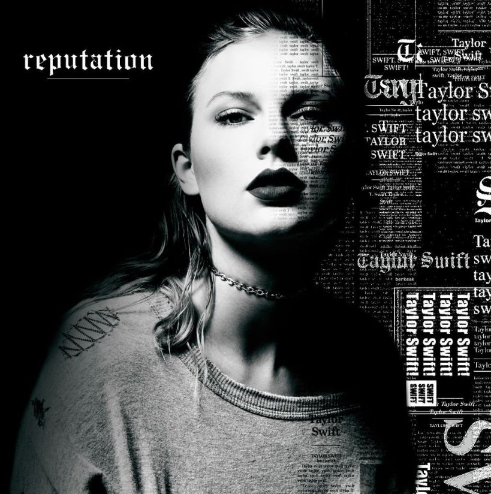
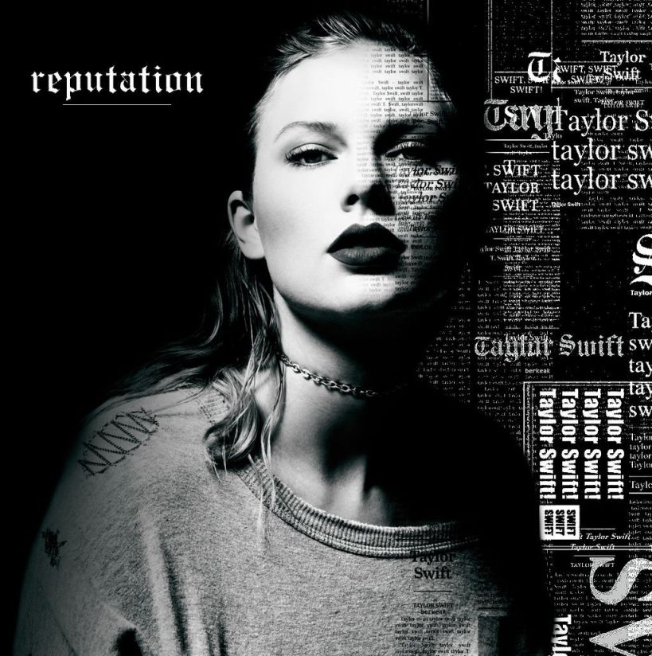

This is a new year, A new beginning, And things will change. -Taylor Swift
Rediscover Sound.
Rediscover the magical world around us.
Expad your Senses.
Expand Your Horizons
Ease Your pain.
Ease your pain by hearing music
At its best, folklore asserts something that has been true from the start of Swift's career. -
United States
Reputation is her most intimate album – a song cycle about how it feels when you stop chasing romance and start letting your life happen.-
United States
Few musical artists would dare to reinvent their sound so brazenly, especially with expectations so high. But with "Shake It Off," Swift proves why she belongs among pop's queen bees. -
United States
Turn up the volume, close your eyes, and let the music take over your soul.

 United States
United States
 United States
United States


 
